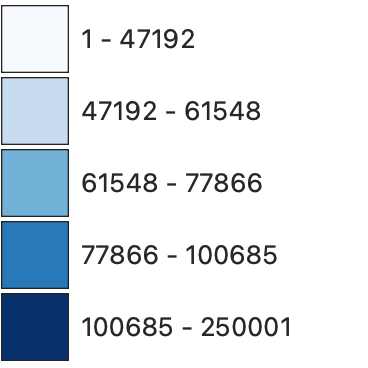

Map Information
This map displays information on LA transit throughout the years. With these, we are attempting to track how LA transit has evolved over the years, which neighborhoods transit is covering, and how LA's policies correlate to their mission to lower the city's environmental footprint.
Click through the years to see how transit has changed and turn on and off layers for clarity
Key
Median Income in LA Neighborhoods
